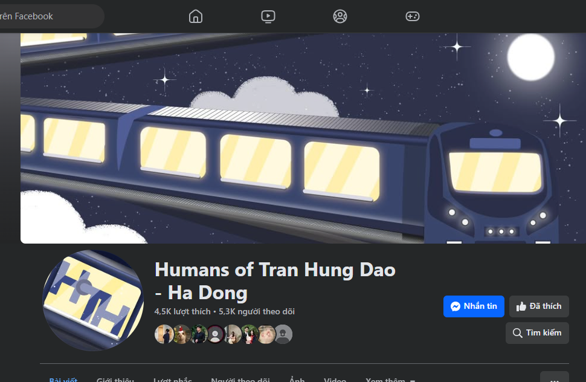
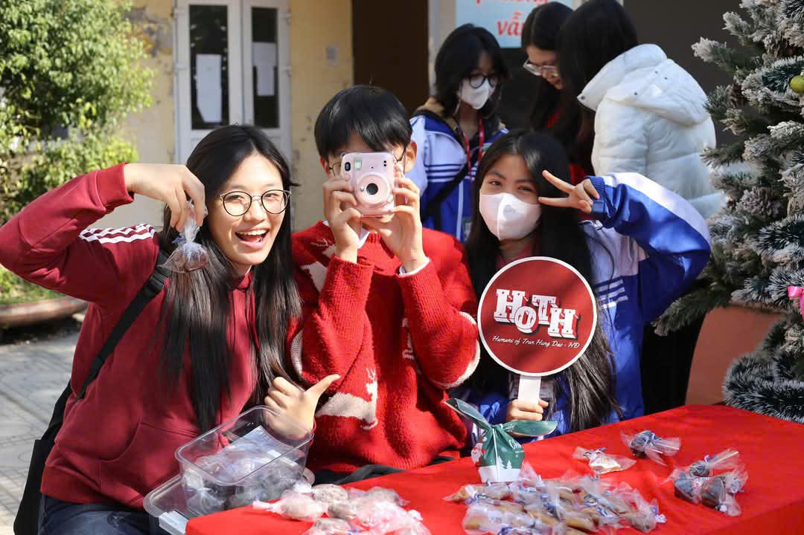

CLB Human of Trần Hưng Đạo-Hà Đông
Humans of Trần Hưng Đạo Hà Đông là một không gian kết nối dành cho học sinh, giáo viên và cựu học sinh của trường THPT Trần Hưng Đạo – Hà Đông. Lấy cảm hứng từ phong trào "Humans of…" nổi tiếng, trang này chia sẻ những câu chuyện, hình ảnh và kỷ niệm đáng nhớ về những con người đã và đang gắn bó với ngôi trường thân yêu.
Tại đây, bạn có thể tìm thấy những câu chuyện chân thực, giàu cảm xúc về học sinh, thầy cô và những nhân vật đặc biệt, góp phần tạo nên bản sắc riêng của ngôi trường. Không chỉ là nơi lưu giữ ký ức, trang còn là cầu nối để các thế hệ học trò có thể giao lưu, chia sẻ và lan tỏa những giá trị tốt đẹp.
Hoạt động của câu lạc bộ
📸 Chụp ảnh & quay phim: Ghi lại những sự kiện quan trọng, khoảnh khắc đời thường và chân dung con người Trần Hưng Đạo.
📝 Viết bài & phỏng vấn: Kể lại những câu chuyện truyền cảm hứng về thầy cô, học sinh và các sự kiện đáng nhớ trong trường.
🎨 Thiết kế & sáng tạo nội dung: Xây dựng hình ảnh, video, poster và các sản phẩm truyền thông độc đáo.
📢 Quản lý Fanpage & truyền thông sự kiện: Đưa tin, quảng bá các hoạt động của trường và kết nối cộng đồng thông qua mạng xã hội.
Lợi ích khi tham gia:
✨ Rèn luyện kỹ năng viết lách, nhiếp ảnh, quay dựng và thiết kế.
✨ Kết nối với những người có chung đam mê và mở rộng mối quan hệ.
✨ Cơ hội tham gia và tổ chức các sự kiện quan trọng của trường.
✨ Phát triển tư duy sáng tạo, kỹ năng làm việc nhóm và quản lý dự án.
Câu lạc bộ Truyền thông không chỉ là nơi lưu giữ những ký ức đẹp mà còn là bệ phóng cho những tài năng trẻ yêu thích truyền thông và sáng tạo nội dung. Nếu bạn có đam mê và muốn thử sức, hãy tham gia cùng chúng mình để cùng nhau tạo nên những điều đặc biệt! 🚀🎤🎥
Hãy theo dõi Humans of Trần Hưng Đạo Hà Đông để cùng nhìn lại hành trình trưởng thành và kết nối với cộng đồng Trần Hưng Đạo theo cách ý nghĩa nhất!
 